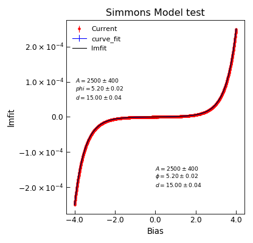

simmons¶
-
Stoner.Fit.simmons(V, A, phi, d)[source]¶ Simmons model of electron tunnelling.
Parameters: - V (array) – Bias voltage
- A (float) – Area of barrier in m^2
- phi (float) – barrier height in eV
- d (float) – barrier width in angstroms
Returns: Data for tunneling rate according to the Sommons model.
Note
Simmons model from Simmons J. App. Phys. 34 6 1963
Example
"""Example of nDimArrhenius Fit.""" from Stoner import Data import Stoner.Fit as SF from numpy import linspace,ones_like from numpy.random import normal #Make some data V=linspace(-4,4,1001) I=SF.simmons(V,2500,5.2,15.0)+normal(size=len(V),scale=100E-9) dI=ones_like(V)*100E-9 d=Data(V,I,dI,setas="xye",column_headers=["Bias","Current","Noise"]) d.curve_fit(SF.simmons,p0=[2500,5.2,15.0],result=True,header="curve_fit") d.setas="xyey" d.plot(fmt=["r.","b-"]) d.annotate_fit(SF.simmons,x=-3.95,y=5E-5,prefix="simmons",fontdict={"size":"x-small"}) d.setas="xye" fit=SF.Simmons() p0=[2500,5.2,15.0] d.lmfit(SF.Simmons,p0=p0,result=True,header="lmfit") d.setas="x...y" d.plot() d.annotate_fit(fit,x=0,y=-2E-4,prefix="Simmons",fontdict={"size":"x-small"}) d.ylabel="Current" d.title="Simmons Model test" d.tight_layout()


{kind=link}
{kind=link}